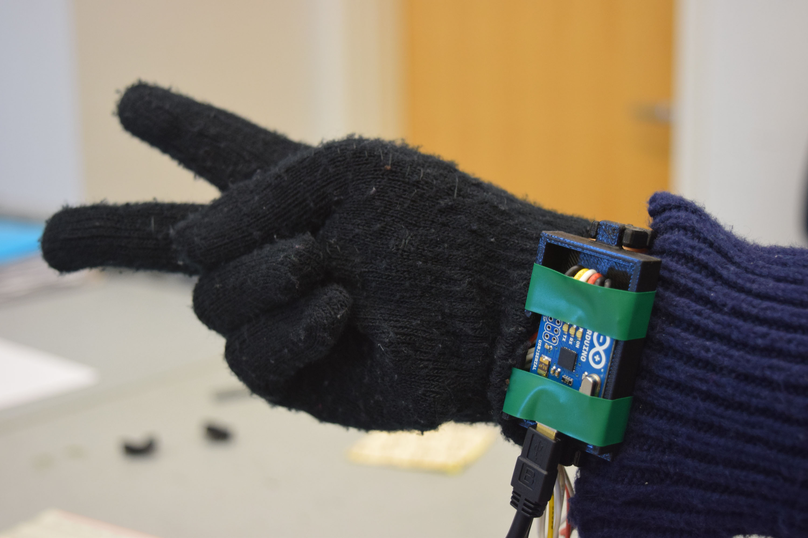
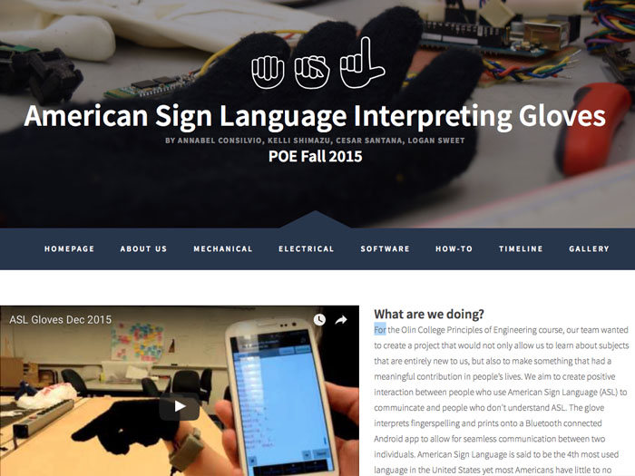
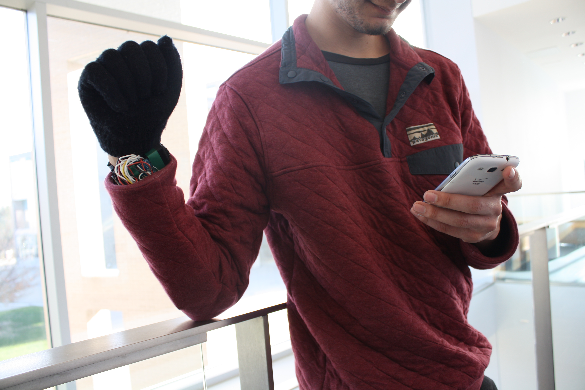

I'm a developer and designer based in Boston, MA.
Hey there. I'm Annabel.
American Sign Language Translating Glove
For the Olin College Principles of Engineering course, our team of five wanted to create a project that would not only allow us to learn about subjects that were entirely new to us, but also to make something that had a meaningful contribution in people’s lives. We aimed to create positive interactions between people who use American Sign Language (ASL) to communicate and people who don't understand ASL. The glove we designed interprets fingerspelling and prints each letter onto a Bluetooth connected Android app, allowing for seamless communication between two individuals. American Sign Language is said to be the 4th most used language in the United States yet most Americans have little to no experience with ASL and few can communicate or understand it well. Our goal was to lessen this divide. On this project, I worked as the product manager and main developer for both the final website and arduino code. I also contributed to some of the electrical aspects of the project. For a full write up on the glove, check out the website I developed and our github.
 
